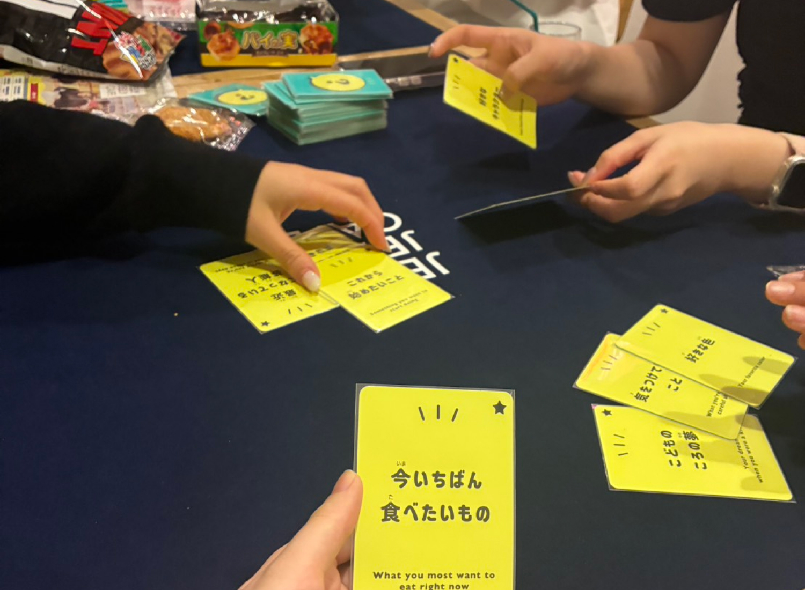
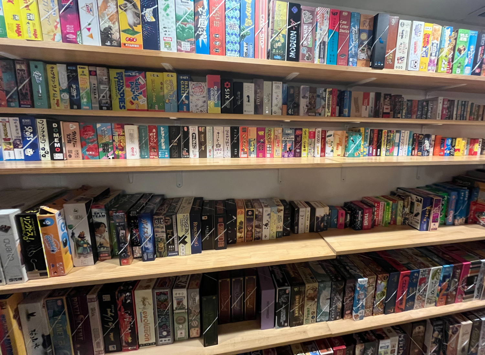
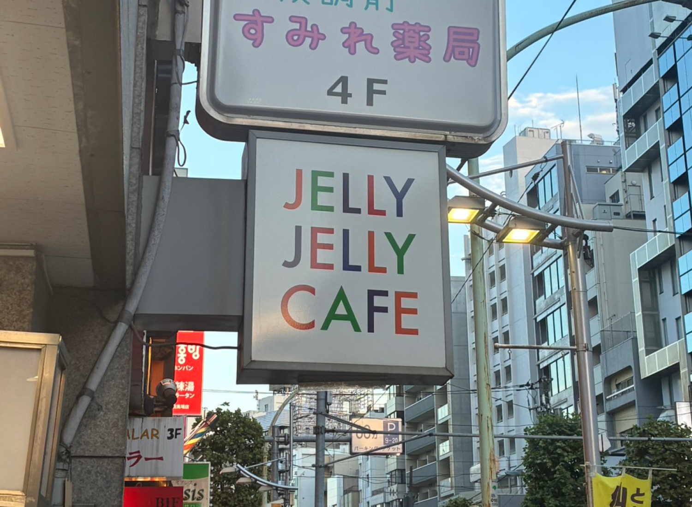

『佐藤です。好きなおにぎりの具は梅です。』というゲーム。
カードのお題を全員で発表し合う
ゲーム中にどんなことを話す？
主に遊んでいるボードゲームの話を中心に、 『サンレンタン』『Ito』など、お題もとに会話をしていくゲームでは、そこから派生して私生活の話につながることも多いそうです。
ゲームを通じて互いのことをぐっと知ることができ、自然と親しみが生まれます。
実際の体験レポはこちら
主に遊んでいるボードゲームの話を中心に、 『サンレンタン』『Ito』など、お題もとに会話をしていくゲームでは、そこから派生して私生活の話につながることも多いそうです。
ゲームを通じて互いのことをぐっと知ることができ、自然と親しみが生まれます。
実際の体験レポはこちら
体験後のお客さんの雰囲気の変化
印象的なゲーム・ハマったボードゲームがあったグループは、「またそのゲームをやりに来よう！」という盛り上がるそうです。
一方で、長時間遊んだお客さんを中心に、「今回遊べなかったゲームを次回は遊びたい！」と話す方もいるようです。
また、ゲームを通じて親密度が高まり、そのままご飯や飲みに行くグループも見られるそうです。
デイタイムが18:00までのこともあり、ご飯に行くのにもちょうどいい時間帯なのかもしれません。
印象的なゲーム・ハマったボードゲームがあったグループは、「またそのゲームをやりに来よう！」という盛り上がるそうです。
一方で、長時間遊んだお客さんを中心に、「今回遊べなかったゲームを次回は遊びたい！」と話す方もいるようです。
また、ゲームを通じて親密度が高まり、そのままご飯や飲みに行くグループも見られるそうです。
デイタイムが18:00までのこともあり、ご飯に行くのにもちょうどいい時間帯なのかもしれません。

１日じゃ遊びきれない量のゲーム

コロナを乗り越えたボドゲカフェ
対面での体験が必須となるボードゲームカフェでは、コロナ禍により大きな打撃を受けました。
コロナ後もお客さんの減少はなかなか改善せず、一時は店舗運営の危機にも陥ったそうです。
そこで、リモートでできるカードゲームをzoomで遊ぶ会や、 当時流行っていたオンライン上で絵を描くゲームで遊ぶ企画などを打つことで、 徐々にお客さんを集めることに成功し、危機を乗り越えたのだそうです！
社会の変化に応じてコミュニケーションのあり方は変わっても、 「遊び」が人と人を繋ぐ力は変わらないことを示すエピソードでした。
対面での体験が必須となるボードゲームカフェでは、コロナ禍により大きな打撃を受けました。
コロナ後もお客さんの減少はなかなか改善せず、一時は店舗運営の危機にも陥ったそうです。
そこで、リモートでできるカードゲームをzoomで遊ぶ会や、 当時流行っていたオンライン上で絵を描くゲームで遊ぶ企画などを打つことで、 徐々にお客さんを集めることに成功し、危機を乗り越えたのだそうです！
社会の変化に応じてコミュニケーションのあり方は変わっても、 「遊び」が人と人を繋ぐ力は変わらないことを示すエピソードでした。